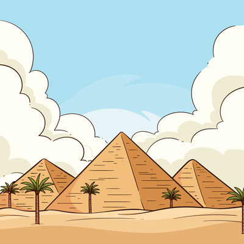

Треугольник
Треугольник применялся тысячелетия назад строителями египетских пирамид. Да и вообще его используют везде: в музыке, авиастроении, при мореплавании, во флористике, в бижутерии и даже при приготовлении пищи.
Треугольник — абсолютно жёсткая фигура. В нём нельзя сдвинуть или раздвинуть никакие две стороны, в отличие от любого другого многоугольника.